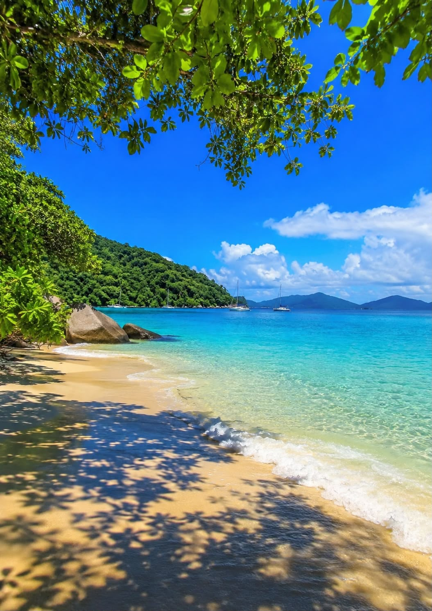

Über uns
📍 Willkommen in Madagaskar – und zwar anders.
📍 Über uns
Mada Discovery ist eine auf Madagaskar spezialisierte Tourismusagentur, die sich der Entdeckung der außergewöhnlichen Landschaften, der vielfältigen Kultur und der herzlichen Menschen unseres Landes widmet.
„Wir möchten Ihnen Madagaskar authentisch, individuell und unvergesslich näherbringen.“
Vom hohen Norden mit seinen einzigartigen Landschaften und paradiesischen Stränden bis zu den tropischen Regenwäldern und den beeindruckenden Tsingy – jede Region Madagaskars hat ihren eigenen Charakter, ihre Traditionen und ihre besonderen Schätze.
Wir möchten Ihnen ermöglichen, diese Vielfalt abseits der klassischen Reiserouten zu entdecken und Madagaskar wirklich zu erleben.
📍 Ihre Reise, unsere Erfahrung
Bei Mada Discovery sind wir überzeugt, dass eine gelungene Reise mehr bedeutet, als nur schöne Orte zu besuchen. Eine unvergessliche Reise braucht eine gute Organisation, herzliche Gastfreundschaft, Sicherheit und die Freiheit, jeden Moment genießen zu können.
Deshalb bieten wir individuell gestaltete Reisen und Rundreisen, die auf Ihre Wünsche, Ihr Reisetempo und Ihr Budget abgestimmt werden.
Wir unterstützen Sie bei der Organisation Ihres Aufenthalts, unter anderem mit:
- 🗺️ individuellen Rundreisen und Reiseprogrammen
- 🏨 sorgfältig ausgewählten Unterkünften
- 🚐 Transfers und Transport
- 🚗 Fahrzeugvermietung
- 👨🏫 geführten Ausflügen und Besichtigungen
- 🌴 Aktivitäten und besonderen Erlebnissen
- 🍽️ kulinarischen Entdeckungen
- ✈️ individuell zusammengestellten Aufenthalten
📍 Madagaskar authentisch erleben
Wir glauben, dass echtes Reisen dort beginnt, wo man sich die Zeit nimmt, ein Land, seine Menschen und seine Kultur kennenzulernen.
Unser Ziel ist es, Ihnen nicht nur die bekannten Sehenswürdigkeiten Madagaskars zu zeigen, sondern auch kleine Dörfer, lokale Traditionen, Märkte, die madagassische Küche, die einzigartige Natur und die kleinen besonderen Momente, die oft zu den schönsten Erinnerungen einer Reise werden.
Dabei legen wir großen Wert auf authentische Erlebnisse und persönliche Begegnungen, damit Sie Madagaskar nicht nur sehen, sondern auch fühlen und erleben können.
📍 Unser Engagement
Ihre Zufriedenheit steht für uns im Mittelpunkt.
Wir legen besonderen Wert auf Qualität, persönlichen Service, Sicherheit, herzliche Gastfreundschaft sowie den respektvollen Umgang mit der Natur und dem kulturellen Erbe Madagaskars.
Jede Reise wird sorgfältig vorbereitet, damit Sie Ihren Aufenthalt entspannt genießen und sich ganz auf die Entdeckung Madagaskars konzentrieren können.
📍 Warum Mada Discovery?
Weil Madagaskar mehr als nur ein Reiseziel ist.
Es ist eine Begegnung.
Es ist ein Abenteuer.
Es ist eine Geschichte, die man selbst erleben muss.
Mit Mada Discovery möchten wir Sie auf dieser besonderen Reise begleiten und gemeinsam mit Ihnen einen Aufenthalt gestalten, der wirklich zu Ihren Wünschen passt.
Entdecken Sie Madagaskar mit uns.
Erleben Sie Madagaskar.
Nehmen Sie unvergessliche Erinnerungen mit nach Hause.
Mada Discovery
Ihr Tor zu einem authentischen Madagaskar. 🫶🏼




waynealexandrine0@gmail.com
+261 37 48 448 89